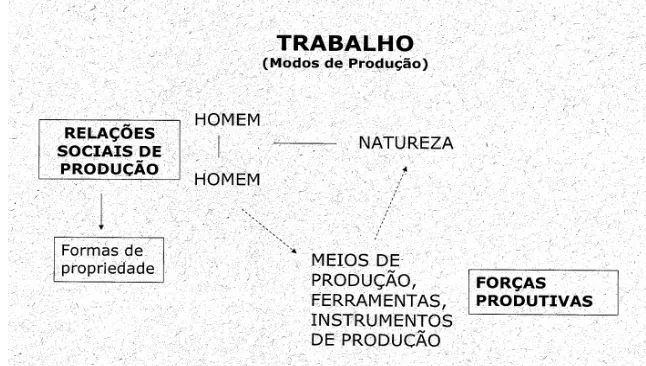
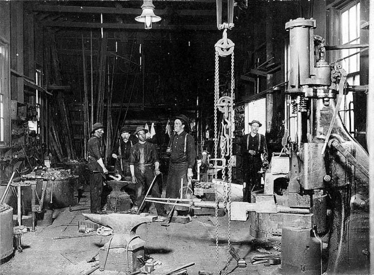

O que são meios de produção?
Segundo a teoria marxista, os meios de produção são os instrumentos, instalações e recursos usados para transformar a natureza em bens de consumo. Eles incluem fábricas, máquinas, ferramentas, terra e infraestrutura.
Modos de produção
Ao longo da história, diferentes modos de produção definiram as relações sociais: comunismo primitivo, escravagismo, feudalismo, capitalismo e socialismo. Cada um possui uma estrutura de classes e formas de organização distintas.
